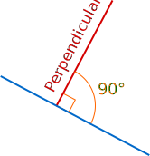
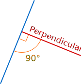
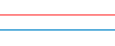
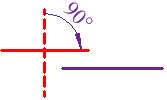
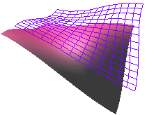

Perpendicular and Parallel
Perpendicular
It just means at right angles (90°) to.
The red line is perpendicular to the blue line:

Here also:

(The little box drawn in the corner, means "at right angles", so we didn't really need to also show that it was 90°, but we just wanted to!)
Try for yourself:
Parallel
Lines are parallel if they are always the same distance apart (called "equidistant"), and will never meet. (They also point in the same direction). Just remember:
Always the same distance apart and never touching.
The red line and blue line are parallel in both these examples:
|  | ||
|
Example 1
|
Example 2
|
Try it yourself:
Perpendicular to Parallel
Question: What is the difference between perpendicular and
parallel?
Answer: 90 degrees (a right angle)
That's right, when we rotate a perpendicular line by 90° it becomes parallel (but not if it touches!)
|  | ||
|
Perpendicular ...
|
Rotate One Line 90°
|
... Parallel !
|
Likewise, parallel lines become perpendicular when one line is rotated 90°.
Parallel Curves
Curves can also be parallel when they keep the same distance apart (called "equidistant"), like railroad tracks.
The red curve is parallel to the blue curve in both these cases:
 |
Parallel Surfaces
Surfaces can also be parallel, like this:


Lines and Planes
Advanced Topic: You can also learn about Parallel and Perpendicular Lines and Planes